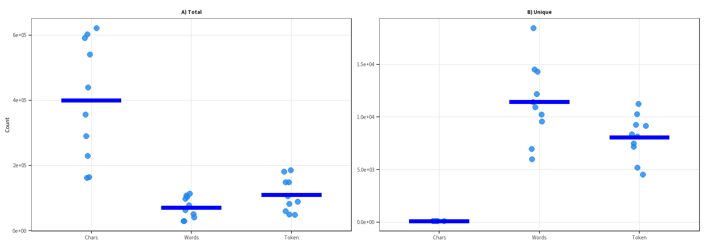
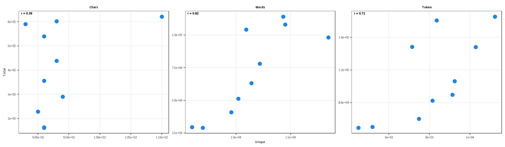
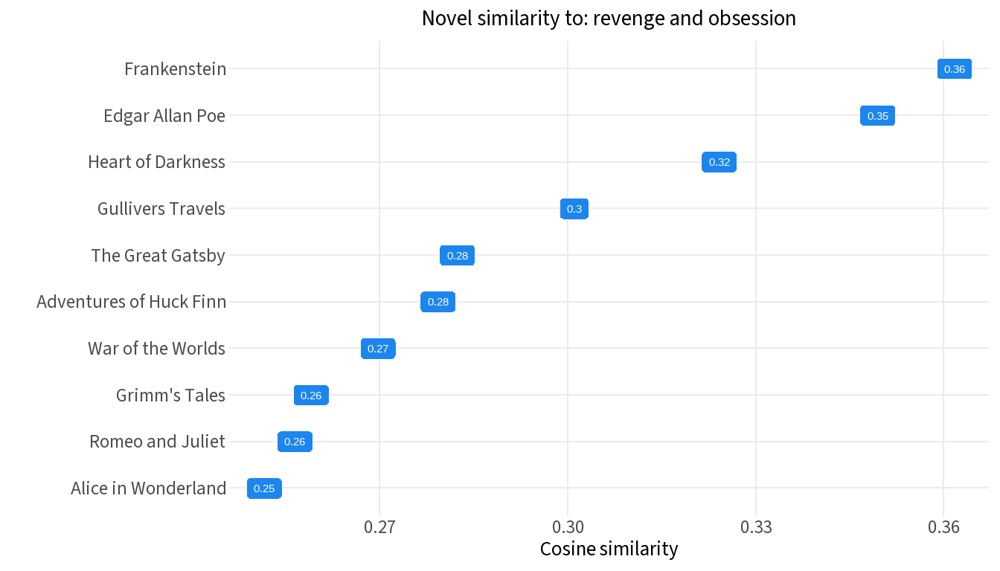

50 ML Projects to Understand LLMs — Chapter 2, Project 2
Author
Dan Killian, with Posit AI an R translation of Mike X Cohen’s original Python notebook
Published
September 23, 2026
Using the code without reading the book may lead to confusion or errors.
How to Import a Book from gutenberg.org
Project Gutenberg offers thousands of public-domain texts in plain text format. Each book is accessible via a URL with a consistent structure — a base URL plus a numeric code unique to each work.
The Project Gutenberg eBook of Frankenstein; or, the modern prometheus
This eBook is for the use of anyone anywhere in the United States and
most other parts of the world at no cost and with almost no restrictions
whatsoever. You may copy it, give it away or re-use it under the terms
of the Project Gutenberg License included with this eBook or online
at www.gutenberg.org. If you are not located in the United States,
you will have to check the laws of the country where you are located
before
Setup: Books and Tokenizer
We select 10 classic books and load the GPT-2 tokenizer as a third comparison alongside character- and word-based tokenization.
baseurl <-"https://www.gutenberg.org/cache/epub/"books <-data.frame(code =c("84", "64317", "11", "1513", "76","219", "2591", "2148", "36", "829"),title =c("Frankenstein", "GreatGatsby", "AliceWonderland", "RomeoJuliet", "HuckFinn","HeartDarkness", "GrimmsTales", "EdgarAllenPoe", "WarOfTheWorlds", "GulliversTravels"),label =c("Frankenstein", "The Great Gatsby", "Alice in Wonderland", "Romeo and Juliet", "Adventures of Huck Finn", "Heart of Darkness", "Grimm's Tales", "Edgar Allan Poe", "War of the Worlds", "Gullivers Travels")) books %>%flextable()
code
title
label
84
Frankenstein
Frankenstein
64317
GreatGatsby
The Great Gatsby
11
AliceWonderland
Alice in Wonderland
1513
RomeoJuliet
Romeo and Juliet
76
HuckFinn
Adventures of Huck Finn
219
HeartDarkness
Heart of Darkness
2591
GrimmsTales
Grimm's Tales
2148
EdgarAllenPoe
Edgar Allan Poe
36
WarOfTheWorlds
War of the Worlds
829
GulliversTravels
Gullivers Travels
# Load GPT-2 tokenizer from local file (run gpt2$save("tokenizer.json") once to create it)gpt2 <- tok::tokenizer$from_file("tokenizer.json")
Part 1: Total Characters, Words, and Tokens
For each book, we count total characters (including spaces, punctuation, and newlines), whitespace-delimited words, and GPT-2 tokens.
counts %>%flextable() %>% flextable::set_caption("Total character, word, and token counts for 10 Project Gutenberg books")
Table 1
title
n_chars
n_words
n_token
Frankenstein
438,840
78,106
106,352
GreatGatsby
290,113
51,262
82,439
AliceWonderland
163,949
29,569
49,114
RomeoJuliet
161,817
29,005
50,317
HuckFinn
590,401
114,130
180,868
HeartDarkness
229,189
40,957
60,231
GrimmsTales
540,158
104,156
148,507
EdgarAllenPoe
621,474
98,105
185,586
WarOfTheWorlds
356,688
63,118
89,564
GulliversTravels
601,857
108,140
148,303
Token counts track word counts fairly closely. GPT-2 subword tokenization produces more tokens than words, since punctuation and uncommon words often split into multiple pieces.
Part 2: Unique and Total Counts
Beyond totals, how many distinct characters, words, and tokens appear in each book? This is a rough measure of vocabulary richness.
full_counts %>%flextable() %>% flextable::set_caption("Total and unique counts by tokenization scheme for 10 books")
Table 2
title
total_chars
unique_chars
total_words
unique_words
total_token
unique_token
Frankenstein
438,840
93
78,106
12,179
106,352
9,239
GreatGatsby
290,113
94
51,262
10,210
82,439
8,151
AliceWonderland
163,949
91
29,569
5,973
49,114
4,510
RomeoJuliet
161,817
91
29,005
6,957
50,317
5,196
HuckFinn
590,401
88
114,130
14,308
180,868
8,353
HeartDarkness
229,189
90
40,957
9,555
60,231
7,486
GrimmsTales
540,158
91
104,156
10,918
148,507
7,151
EdgarAllenPoe
621,474
110
98,105
18,445
185,586
11,225
WarOfTheWorlds
356,688
91
63,118
11,417
89,564
9,131
GulliversTravels
601,857
93
108,140
14,491
148,303
10,274
# Reshape to long format for plottinglong_counts <- full_counts |>pivot_longer(cols =-title,names_to =c("measure", "scheme"),names_sep ="_",values_to ="count" ) |>mutate(scheme =factor(tools::toTitleCase(scheme), levels =c("Chars", "Words", "Token")),measure =if_else(measure =="total", "A) Total", "B) Unique") )ggplot(long_counts, aes(x = scheme, y = count)) +geom_jitter(width =0.08, size =2.5,color ="dodgerblue2", alpha =0.8) +stat_summary(fun = mean, geom ="crossbar", width =0.6,linewidth =0.8, color ="blue") +scale_y_continuous(labels = scales::label_scientific()) +facet_wrap(~ measure, scales ="free_y") +labs(x =NULL, y ="Count") + faceted +theme(strip.background =element_blank(),strip.text =element_text(face ="bold"))

Figure 1: Total (A) and unique (B) counts across tokenization schemes for 10 Project Gutenberg books. Points are individual books; crossbar marks the mean.
Unique character counts are tightly clustered — most books draw from roughly the same set of ASCII characters. Unique word and token counts spread out more, reflecting differences in author vocabulary and subject matter.
Part 3: Unique by Total Counts
Do longer books use a wider vocabulary? We examine the relationship between total and unique counts across the three tokenization schemes.
# Reshape: one row per book per scheme, with columns for total and uniquescatter_data <- full_counts |>select(title,chars_total = total_chars, chars_unique = unique_chars,words_total = total_words, words_unique = unique_words,token_total = total_token, token_unique = unique_token) |>pivot_longer(cols =-title,names_to =c("scheme", "measure"),names_sep ="_" ) |>pivot_wider(names_from = measure, values_from = value) |>mutate(scheme =factor(tools::toTitleCase(scheme),levels =c("Chars", "Words", "Token")))# Per-scheme correlation labelscor_labels <- scatter_data |>group_by(scheme) |>summarise(r =cor(unique, total), .groups ="drop") |>mutate(label =sprintf("r = %.2f", r))ggplot(scatter_data, aes(x = unique, y = total)) +geom_point(size =3, color ="dodgerblue2") +geom_text(data = cor_labels, aes(label = label),x =-Inf, y =Inf, hjust =-0.2, vjust =1.5,fontface ="bold", inherit.aes =FALSE) +scale_x_continuous(labels = scales::label_scientific()) +scale_y_continuous(labels = scales::label_scientific()) +facet_wrap(~ scheme, scales ="free") +labs(x ="Unique", y ="Total") + faceted +theme(strip.background =element_blank(),strip.text =element_text(face ="bold"))

Figure 2: Relationship between unique and total counts for each tokenization scheme across 10 books.
Characters show essentially no relationship between unique and total counts — the character set saturates quickly regardless of book length. Word and token unique counts track total counts more closely, suggesting longer books do tend to draw on larger vocabularies.
One book appears as an outlier in unique character count. Let’s identify it.
full_counts |>slice_max(unique_chars, n =1) |>select(title, unique_chars) %>%flextable()
title
unique_chars
EdgarAllenPoe
110
The Edgar Allen Poe collection contains an unusually large number of distinct characters. We can inspect the full character set to understand why.
The Poe collection includes accented and non-Latin characters — likely from French or other language quotations embedded in the text — which inflates the unique character count relative to the other books.
Addendum
Can we query the corpus with a sentence, passage, or keywords, and get back a list of similarity to the books in the corpus? We will embed each book as the average of its chunk embeddings, embed the query, then rank books by cosine similarity to the query.
library(reticulate)# helper: split text into ~500-word chunkschunk_text <-function(text, size =500) { words <-strsplit(text, "\\s+")[[1]] starts <-seq(1, length(words), by = size) purrr::map_chr(starts, \(s) paste(words[s:min(s + size -1, length(words))], collapse =" "))}# load model (downloads ~90MB on first run)st <-import("sentence_transformers")model <- st$SentenceTransformer("all-MiniLM-L6-v2")# fetch all book textsbook_texts <- purrr::map(books$code, \(code) {paste0(baseurl, code, "/pg", code, ".txt") |>readLines(encoding ="UTF-8") |>paste(collapse ="\n")})# embed each book as average of chunk embeddings (save to disk to avoid recomputing)emb_path <-"book_emb.rds"if (file.exists(emb_path)) { book_emb <-readRDS(emb_path)} else { book_emb <- purrr::map(book_texts, \(text) { chunks <-chunk_text(text) embs <- model$encode(chunks)colMeans(embs) })saveRDS(book_emb, emb_path)}# embed query and compute cosine similarity to each bookquery <-"revenge and obsession"query_emb <- model$encode(query)cos_sim <- purrr::map_dbl(book_emb, \(emb) {sum(query_emb * emb) / (sqrt(sum(query_emb^2)) *sqrt(sum(emb^2)))})out <-tibble(title = books$label, cos_sim = cos_sim) |>arrange(desc(cos_sim)) out %>%flextable()
title
cos_sim
Frankenstein
0.362
Edgar Allan Poe
0.349
Heart of Darkness
0.324
Gullivers Travels
0.301
The Great Gatsby
0.282
Adventures of Huck Finn
0.279
War of the Worlds
0.270
Grimm's Tales
0.259
Romeo and Juliet
0.256
Alice in Wonderland
0.252
ggplot(out, aes(cos_sim, reorder(title, cos_sim))) +geom_label(aes(label=round(cos_sim,2)),fill="dodgerblue2",color="white",size=4) +labs(x="Cosine similarity",y="",title=glue::glue("Novel similarity to: {query}"))

Now let’s wrap the query into a function for easier interactive work.